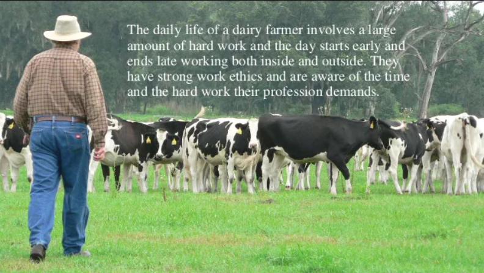

Welcome to our Dairy

The mission of the Dairy Management Project is to create a communication platform between rural area people and dairy management. Our main goal is to develop this application to encourage a dairy industry. DAIRY MANAGEMENT SYSTEM is a software application to maintain day to day transactions in a Milk Distributor Office. This software help to register all the details and records of farmers, stocks ,bills etc., . To manage all these they require a full-fledged software which will take care all these.
our aim
To build a strong ,healthy and nutritious country by providing an employement to all small-scale farmers
we can improve data quality,so that we can view the records on daily basis
Their will be no error in generating the bill
Reduce the manual work
Prevent and reduce human error
Easy access of all records
working
The milk will be collected from farmers in milk centers from different villages.
Each village has a milkcenter.
An employee is assaigned to a milk center for daily milk collection .
The route officer will collect milk from milk center to the head office
and there it will be purified and converted into various products.
<-previous page